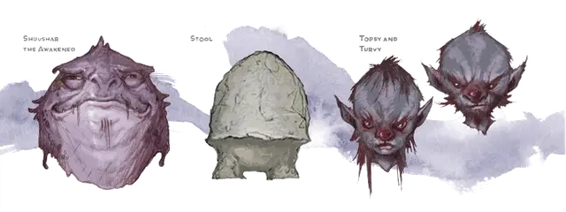

Стул
Stool
Маленькое Растение, законно-нейтральное, именной НИП

Класс Доспеха 10
Хиты 7 (2к6)
Скорость 10 футов
| мод | спас | ||
|---|---|---|---|
| СИЛ | 8 | −1 | −1 |
| ЛОВ | 10 | +0 | +0 |
| ТЕЛ | 10 | +0 | +0 |
| мод | спас | ||
|---|---|---|---|
| ИНТ | 8 | −1 | −1 |
| МДР | 11 | +0 | +0 |
| ХАР | 5 | −3 | −3 |
Чувства тёмное зрение 120 футов, пассивное Восприятие 10
Опасность 0
Бонус мастерства +2
Особенности
Споры страдания. Если Стул получает урон, все остальные микониды в пределах 240 футов чувствуют его боль.
Слабость на солнце. Находясь на солнечном свету, Стул совершает с помехой проверки характеристик, броски атаки и спасброски. Стул умирает, если проводит больше 1 часа под прямыми солнечными лучами.
Действия
Кулак. Рукопашная атака оружием: +1 к попаданию, досягаемость 5 футов, одна цель. Попадание: Дробящий урон 1 (1к4 − 1) плюс урон ядом 2 (1к4).
Споры взаимопонимания (3/день). От Стула расходятся споры в радиусе 10 футов. Эти споры обходят углы и воздействуют только на существ с Интеллектом 2 и выше, которые не являются нежитью, конструктами и элементалями. Попавшие под действие существа могут телепатически общаться друг с другом, если находятся в пределах 30 футов друг от друга. Эффект длится 1 час.
Описание
Молодой миконид